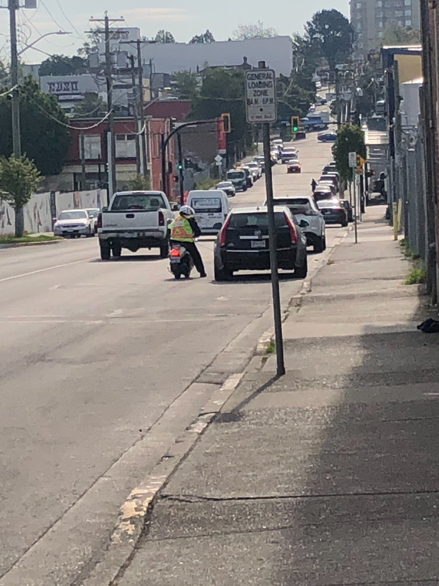
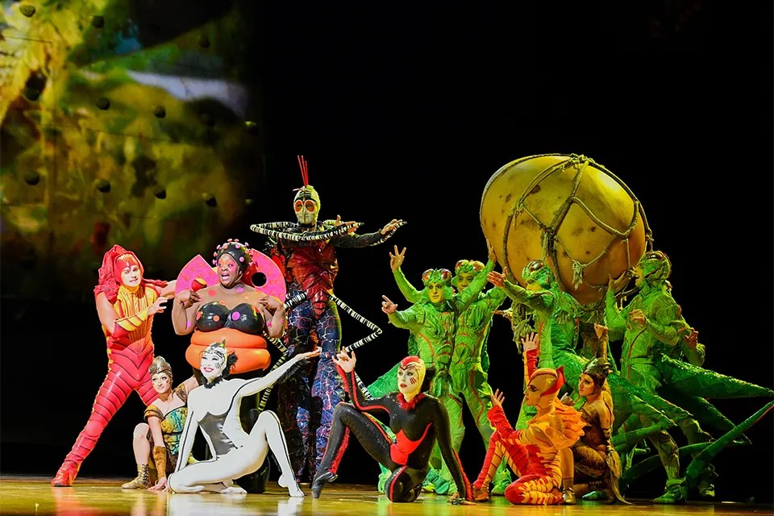
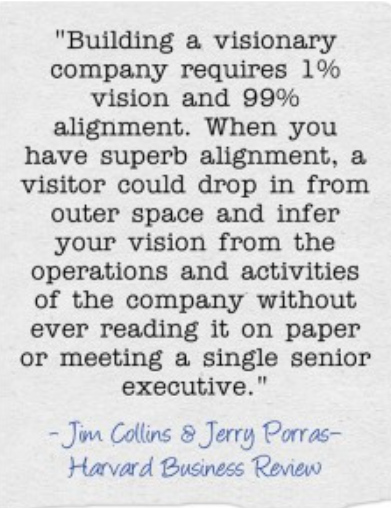
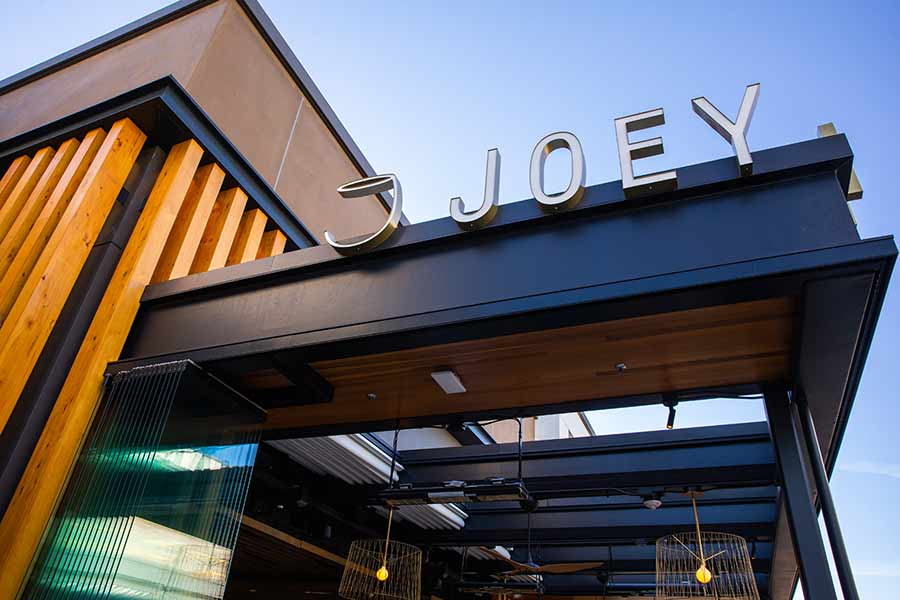
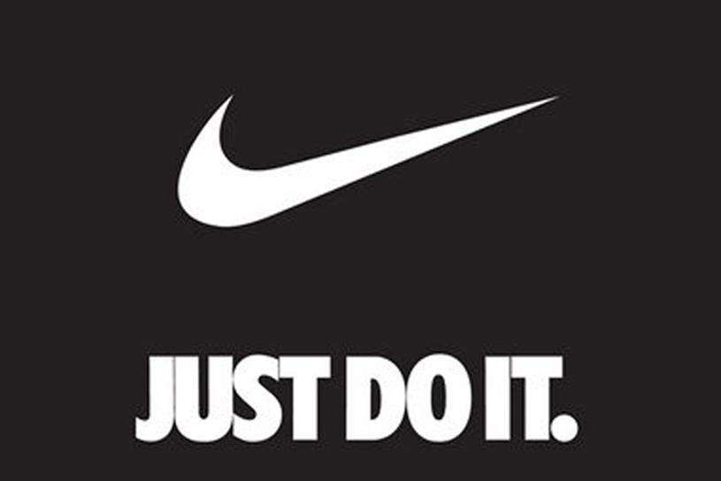
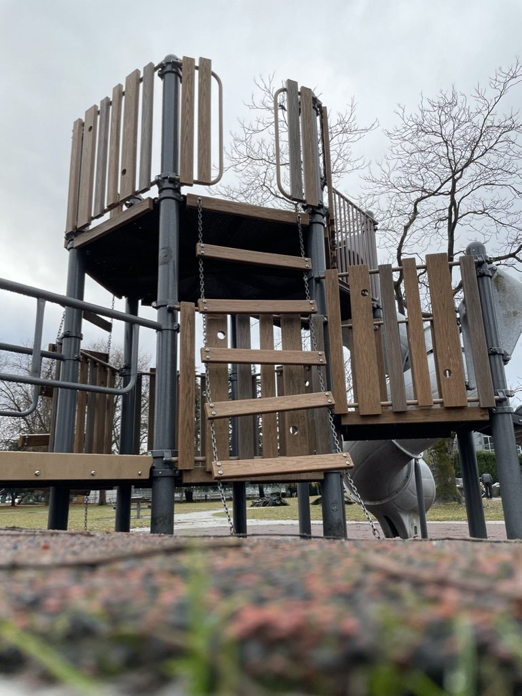
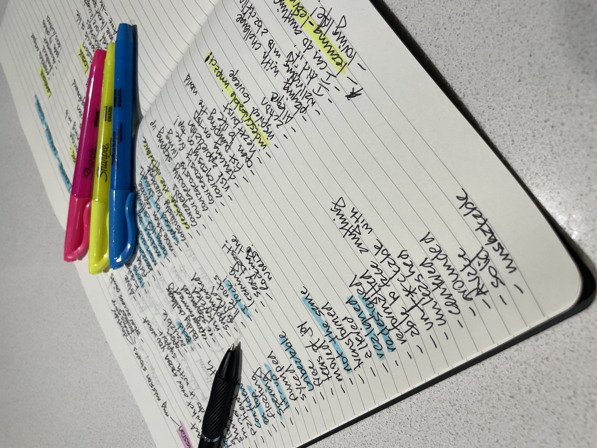

Nick Banks Consulting
// workshop · 2026
The un-mission mission.
Leaning, learning, loving.
// a workshop on what mission actually is
NBC
// un-mission workshop
01 / 38
Welcome
// click any item to jump there
Here's where we're going.
- 01 /Introductions
- 02 /Why listen to me
- 03 /Architecture, intention, environment
- 04 /The mission – what it is, what it isn't
- 05 /How do we find ours
- 06 /Your turn
- 07 /What's next
- 08 /Questions
NBC
// un-mission workshop
01 / 38
Before we start
// parking attendant
Just for now.
// I'm the parking attendant. Marking your tires.

// photo: jean-marc
NBC
// un-mission workshop
01 / 38
02
Part two
Why listen to me.
NBC
// un-mission workshop
01 / 38

Why listen to me
// the framing
Radical demonstrations of high-performance organizations.
// measured by
- 01 /Outstanding financial performance
- 02 /Exceptional operational excellence and quality
- 03 /Unprecedented social impact
- 04 /Having fun
NBC
// un-mission workshop
01 / 38
Why listen to me (continued)
// then
// nick and rags. whistler. one scotch, one cigar.

NBC
// un-mission workshop
01 / 38
Where I am now
// why this work, and why now
Re-invigorated.
Re-committed.

NBC
// un-mission workshop
01 / 38
03
Part three
Foundations.
// architecture, intention, environment
NBC
// un-mission workshop
01 / 38

Three foundations
// how it shows up
How high-performance happens.
-
01 /
Architecture. // Ferrari vs Chevy. Designed for what?
-
02 /
Intention. // What's actually happening, not what we say
-
03 /
Environment. // Church or Irish pub. Same street, different calls.
NBC
// un-mission workshop
01 / 38
04
Part four
The mission.
// what it is, what it isn't, where it comes from
NBC
// un-mission workshop
01 / 38
A Japanese woman told me
// shi-mei
The Japanese for mission is two characters.
使
// use
命
// life
= mission. how you want to use your life.
NBC
// un-mission workshop
01 / 38
My definition
// the whole thing, in one sentence
// that's the whole thing
How we want to leave everyone we come into contact with.
NBC
// un-mission workshop
01 / 38
Where this comes from
// built to last – the book
Jim Collins studied companies that lasted.
NBC
// un-mission workshop
01 / 38
The pattern he found
// the chart
// most companies that survived stayed flat
// a smaller subset did something different
// they all had a commitment statement
NBC
// un-mission workshop
01 / 38

Guess who
// who said this?
Magic, fun, and happiness.
Disney.
NBC
// un-mission workshop
01 / 38

Guess who
// a tough one. who said this?
To invoke the imagination, provoke the senses, and evoke the emotions of people around the world.
Cirque du Soleil.
NBC
// un-mission workshop
01 / 38

Guess who (both)
// two competitors. one mission, one... statement.
// coca-cola vs pepsi
To refresh the world.
vs
"We have absolute clarity around what we do. We sell X. Our success will ensure customers build their businesses, employees build their futures, and shareholders build their wealth."
NBC
// un-mission workshop
01 / 38

Guess who
// who said this?
To inspire and nurture the human spirit. One coffee, one community at a time.
Starbucks.
NBC
// un-mission workshop
01 / 38
More examples
Some other mission statements from clients.
- Life unleashed.
- Holy fuck what a rush.
- Lit up.
- Stoked.
- Life is great.
- Unlocked.
- Leaning, learning, loving.
- Elevating the world from mediocrity to greatness.// chip @ lululemon
NBC
// un-mission workshop
01 / 38
05
Part five
How to use it.
NBC
// un-mission workshop
01 / 38
Tool 01
01
Alignment tool.

NBC
// un-mission workshop
01 / 38
Tool 02
02
Decision-making tool.

NBC
// un-mission workshop
01 / 38
Tool 03
03
Creativity and design tool.

NBC
// un-mission workshop
01 / 38
Tool 04
04
Elevating tool.

NBC
// un-mission workshop
01 / 38
Tool 05
05
Do the right thing tool.
NBC
// un-mission workshop
01 / 38
05a
A quick clear-up
What it isn't.
NBC
// un-mission workshop
01 / 38
Not this
01
Not a slogan or tagline.

NBC
// un-mission workshop
01 / 38
Not this either
02
Not a make-everyone-happy tool.

NBC
// un-mission workshop
01 / 38
06
Part six
Your turn.
First, a story.
NBC
// un-mission workshop
01 / 38
Meet Somer

What I realized
I could die now and she'd be okay.
Start here
// three prompts
How do you want to leave people?
- 01 / Everyone you come into contact with – clients, employees, even people who've left. How do you want them to feel?
- 02 / Your closest, dearest person – after a lunch together. How would you want to leave them, such that you could "shoot me now" and be okay?
- 03 / Your children – if they were left this way in life, would you be content?
NBC
// un-mission workshop
01 / 38
Capture
// type freely. nothing's saved beyond this session.
Let's get the words down.
NBC
// un-mission workshop
01 / 38
What we've already lived
// before, during, after. find the stories.
When have you lived this?
NBC
// un-mission workshop
01 / 38
From your DNA
// we didn't start from nothing.
What's worth carrying forward?
NBC
// un-mission workshop
01 / 38
Listen for patterns
// try it on.
What's emerging?
NBC
// un-mission workshop
01 / 38
I've done this too

My own pages.
07
Part seven
What's next.
NBC
// un-mission workshop
01 / 38
Now what
// we keep working it together.
Try it on.
NBC
// un-mission workshop
01 / 38
08
Part eight
Questions?
Open floor. What's coming up?
NBC
// un-mission workshop
01 / 38
Nick Banks Consulting
Thank you.
Now go and do this work.
Strategy with a pulse.
nick@nickbanksconsulting.com
/
nickbanksconsulting.com
/
778.987.5230